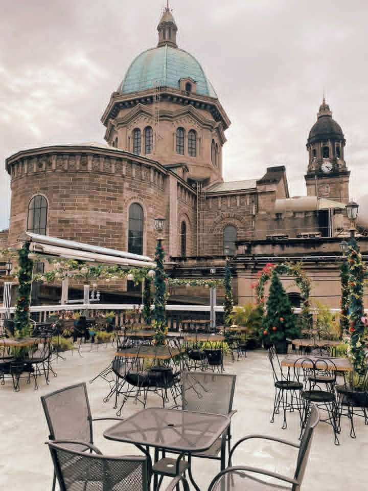

Perched quietly beside ancient stone architecture, La Cathedral Cafe provides an enchanting nocturnal retreat for those seeking historic charm paired with handcrafted espresso drinks.
As darkness settles over Intramuros, warm capiz lanterns illuminate the open terrace. The quiet ambiance makes it an ideal spot to spend a peaceful late evening reflecting over dark brews and delicate pastries.
◆
| Address | Intramuros, Manila |
|---|---|
| Opening Hours | 8:00 AM – 11:00 PM Daily |
| Price Range | ₱200 – ₱500 per person |
| Best Time to Visit | 7:00 PM onwards (peak lantern lighting & night air) |
Know another place worth adding?
Suggest a Place